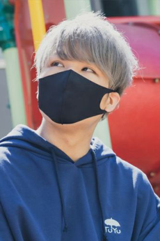

Pusu:
 Pusu, atau dikenal sebagai Zips, adalah produser musik Jepang, penulis lirik, komposer, arranger, gitaris dan anggota Tuyu. Dia adalah mantan vokalis, dan paling dikenal sebagai produser musik di balik lagu vocaloid tahun 2012 Heisei Cataclysm.
Rei:
Rei adalah vokalis Jepang dan anggota unit musik Tuyu. Dia diam-diam hadir secara online dan tidak memperlihatkan wajahnya secara terbuka di media sosial
Miro:
Bertanggung jawab atas piano. Setelah bergabung, miro menangani semua aransemen piano Tsuyu . [17] Dia adalah seorang pianis yang berspesialisasi dalam pertunjukan improvisasi , dan aransemen pianonya yang indah dan halus menambah bakat pada lagu-lagunya. Sebelumnya, dia telah berpartisipasi dalam dukungan langsung untuk artis terkenal, aransemen piano, rekaman, iklan, dll. Dia rutin mendistribusikan penampilannya di Nico Nico Douga, YouTube, dan aplikasi video distribusi TwitCasting
| Tanggal Rilis | Judul Lagu |
|---|---|
| 25 Mei 2022 | Itsuka otona ni nareruto ī ne |
| 27 Juli 2022 | Andākizzu |
| 28 September 2022 | Amemoyō |
| 30 Oktober 2022 | Don'na ketsumatsu ga o nozomi dai? |
| 15 Januari 2023 | Kizutsuke do, itoshi teru |
| 15 Maret 2023 | Koredakara yame ran nai! |
| 25 April 2023 | Andāhiroin |
sumbernya, klik disini
| Yahya Ayyasy | |
| NIM: | 11210251000096 |
|